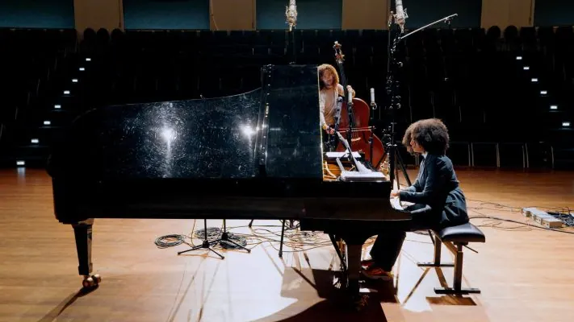

Nieuws ·
James Oesi en Djuwa Mroivili brengen een unieke mix van klassieke muziek naar De Vereeniging in Nijmegen
De bijzondere solist James Oesi komt met pianist Djuwa Mroivili naar De Vereeniging in Nijmegen. Zaterdag 2 maart speelt deze van origine Zuid Afrikaanse contrabassist klassieke muziek, naast beroemde namen als Antonín Dvořák, Johannes Brahms en George Gerswhin plaatsen Mroivili en Oesi klassieke componisten van kleur uit dezelfde tijd in dezelfde rij. Ziet u ook https://www.stadsschouwburgendevereeniging.nl/programma/6874//james-oesi-djuwa-mroivilien

James Oesi
Een bijzonder concert, want je ziet contrabas niet vaak in de hoofdrol. James Oesi doet dat met verve. Sinds zijn komst naar Nederland in 2009 i hij een bekend gezicht in de klassieke muziekwereld. Hij is een graag geziene gast in programma’s als Podium Klassiek, Op1, op NPO Radio 4 en NPO Radio 1. Hij tourde internationaal in onder andere Frankrijk, Engeland en Zuid Afrika en speelt in Nederland in grote zalen en festivals als het Concertgebouw, De Doelen, Wonderfeel en November Music.
Djuwa Mroivili (1998, Amsterdam) is pianist, docent en activist en studeert klassieke muziek aan het ArtEZ conservatorium in Zwolle. Mroivili zoekt naar manieren om systemen die een exclusieve klassieke muziektraditie in stand houden te ontmantelen, met name in het (kunst)onderwijs. In haar werk laat ze de prachtige klassieke muziek van verscheidene onterecht vergeten zwarte componisten van de Afrikaanse diaspora weerklinken.